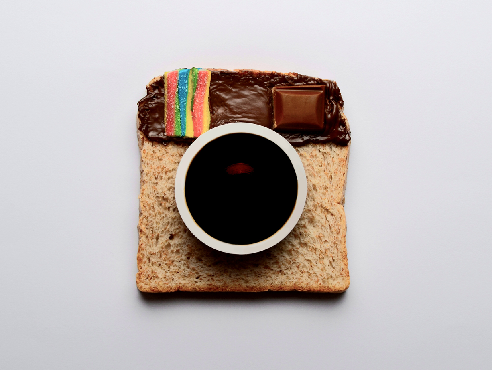

VIEW SUBJECT

VIEW FOOD
VIEW OUTDOOR
Capturing scenic landscapes and candid portraits has helped me reconnect with life’s simple beauties, allowing me to appreciate the small yet meaningful moments — especially through the lens of macro photography. As a detail-oriented designer, I’m deeply inspired by the often-overlooked elements of everyday life. This practice has given me a fresh perspective, enabling me to experience the world in a heightened, almost euphoric way. That sense of awareness now informs every aspect of my creative work, extending far beyond photography alone.